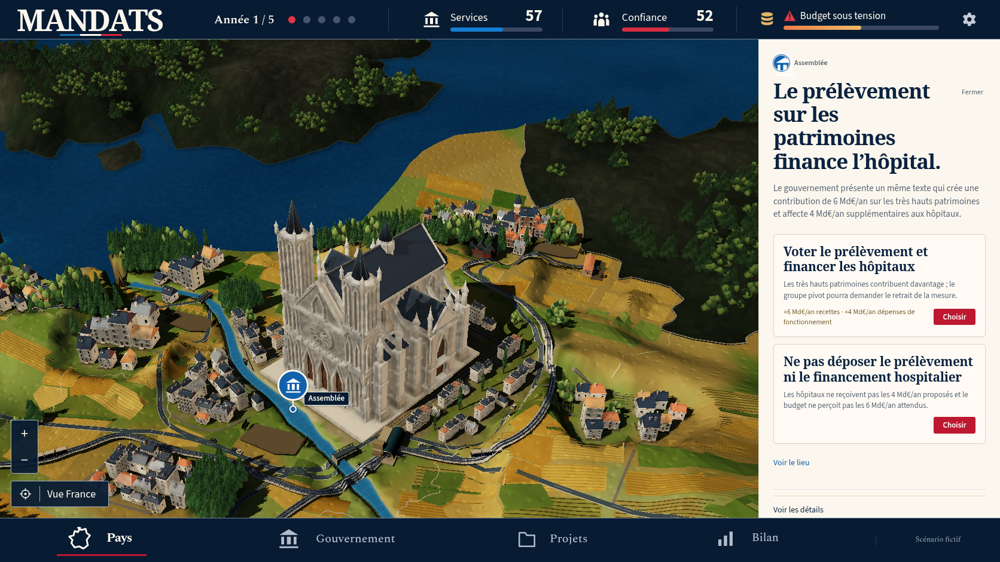
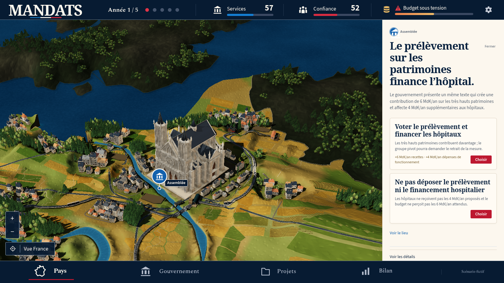
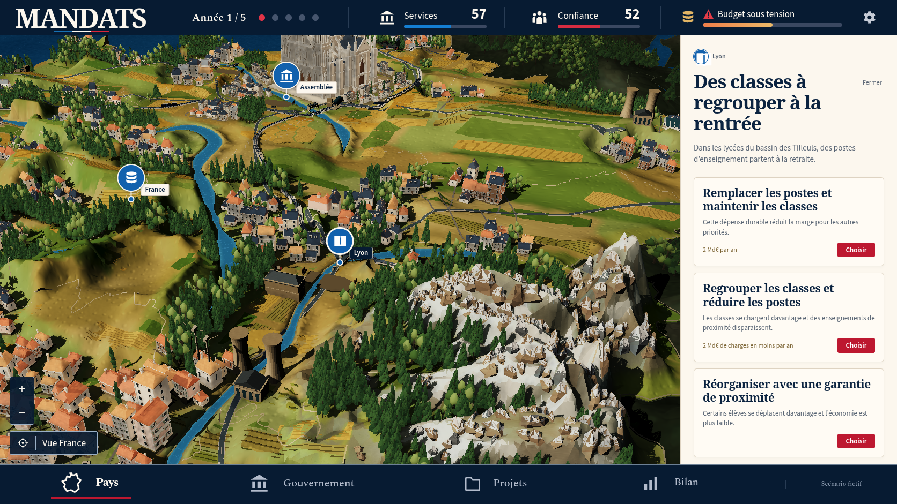
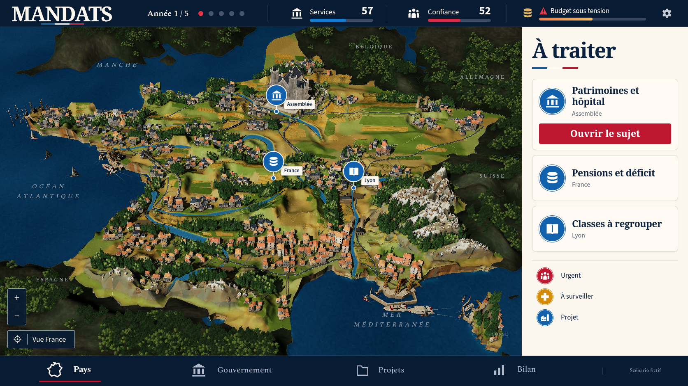

Passe 35 : Non conforme à la maquette
La référence confirmée et le jeu réel
La reprise technique et les contacts contrôlés passent, et la silhouette gothique évolue. Le diorama reste éloigné de la référence confirmée : voiles encore noires, ombres lourdes, campagnes clairsemées, grands pans anguleux et matières des Alpes et des côtes encore insuffisantes.
7 vues réelles, Chromium 151.0.7922.173, 1672 × 941, DPR 1, zéro décision. Erreurs JavaScript : 0 ; requêtes échouées : 0 ; erreurs HTTP : 0 ; avertissements console : 0 ; erreurs console : 0.
Référence confirmée

Vue nationale réelle

Vue nationale réelle35 : campagnes encore clairsemées, grands pans anguleux et ombres lourdes ; certains bateaux portent des voiles noires.
Conditions et actions · Entrées de partieParis


Paris35 : les pointes gothiques et les volumes du monument évoluent, mais le tissu urbain et les ombres restent différents de la maquette.
Conditions et actions · Entrées de partieSeine et berges


Inspection native de la Seine et de ses berges35 : réseaux et constructions sont visibles, avec un contraste et une composition encore éloignés de la référence.
Conditions et actions · Entrées de partieLyon et Alpes


Lyon et Alpes35 : neige et volumes minéraux sont visibles ; les grands pans et leurs textures manquent encore de la finesse de la référence.
Conditions et actions · Entrées de partieRetour national


Retour national35 par les contrôles natifs, zéro décision dépensée ; les écarts de densité, de matière et d’ombre demeurent.
Conditions et actions · Entrées de partieÉcarts observés
- Root a effectivement ouvert la référence confirmée et les cinq vues natives35 de cette galerie.
- Les voiles de certains bateaux restent noires ; les ports et la mer ne retrouvent pas la composition détaillée de la maquette.
- Les ombres restent lourdes sur les voies, les rues et certains volumes.
- Les campagnes demeurent clairsemées et les grands pans du relief et du contexte restent anguleux, avec trop peu de transitions et d’activités par rapport à la référence.
- Les pointes gothiques de la cathédrale améliorent sa silhouette ; le monument et le tissu parisien ne reproduisent pas la maquette.
- Les textures et les formes des Alpes et des côtes restent en deçà de la richesse et de la finesse de la référence.
- Le retour national utilise les contrôles natifs et ne dépense aucune décision.
- Les résultats physiques et les deux parcours navigateur ciblés35 sont des validations techniques. Les quatre suites complètes35 restent non exécutées et aucune fidélité artistique ou cadence FPS n’est établie.
Preuves de capture · Build réellement servi · Revue enregistrée